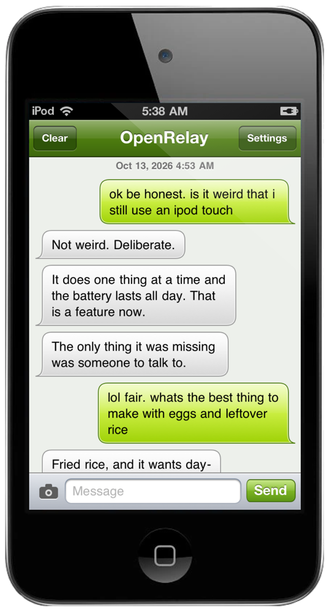
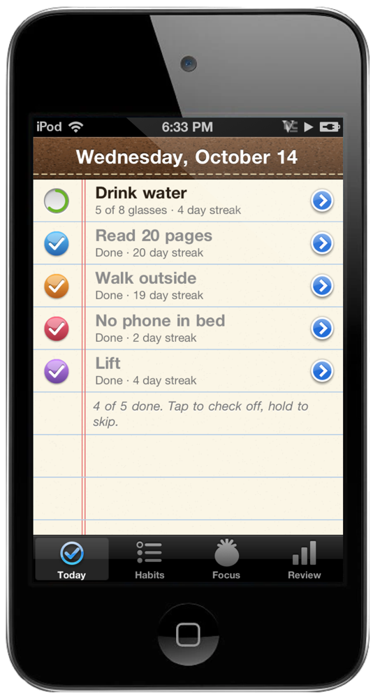
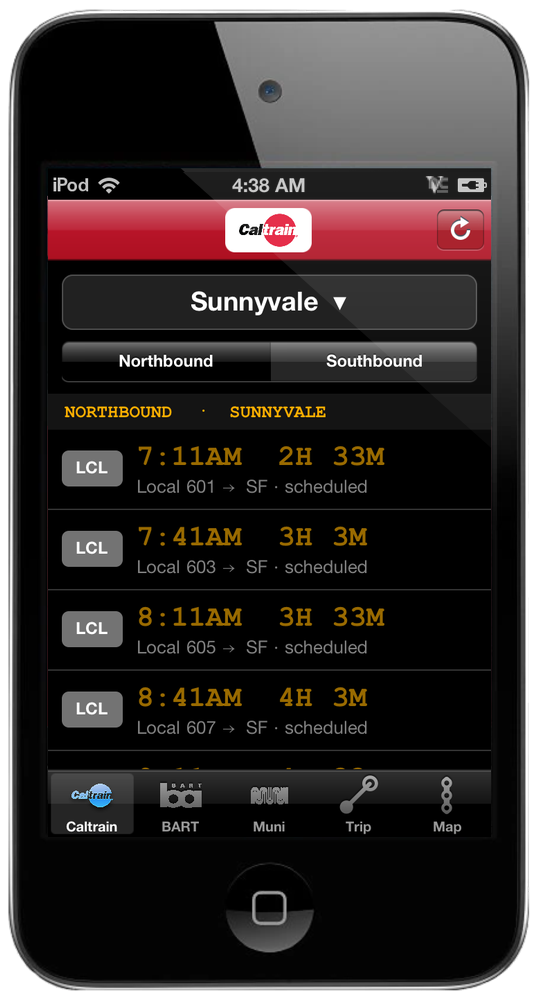
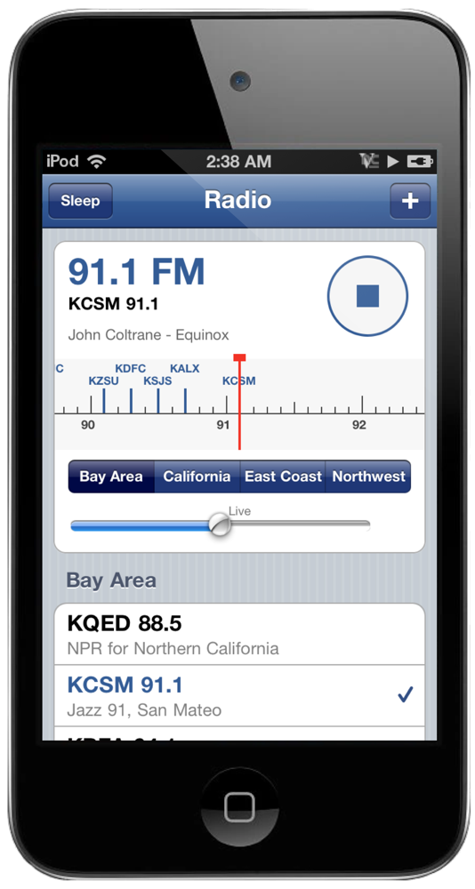

OpenRelay
Text with the best open models. Like texting a friend.
Learn more ›
Laya Ball
Shake. Decide. Repeat.
Learn more ›
Sets
Every rep, on your iPod.
Learn more ›
Habits
Small things, every day.
Learn more ›
Next Train
Caltrain, BART and Muni. Live.
Learn more ›
Radio
Forty stations. A real dial.
Learn more ›How to installJailbroken iPod touch 4 or iPhone 4 on iOS 4.3 and up. Free, and open source: OpenRelay, Laya Ball, Sets, Habits, Next Train, Radio.